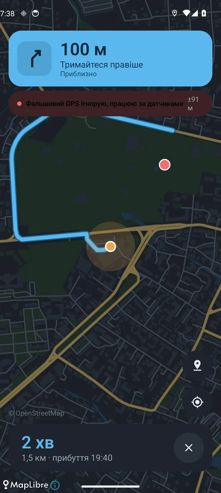
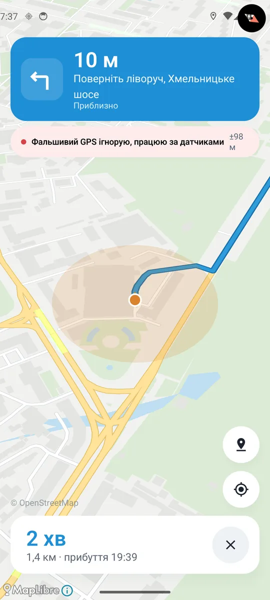
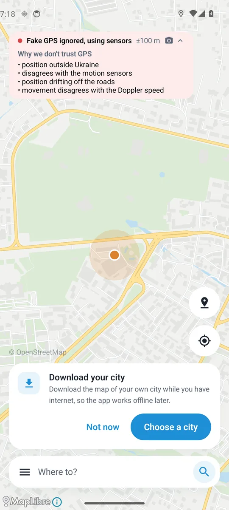
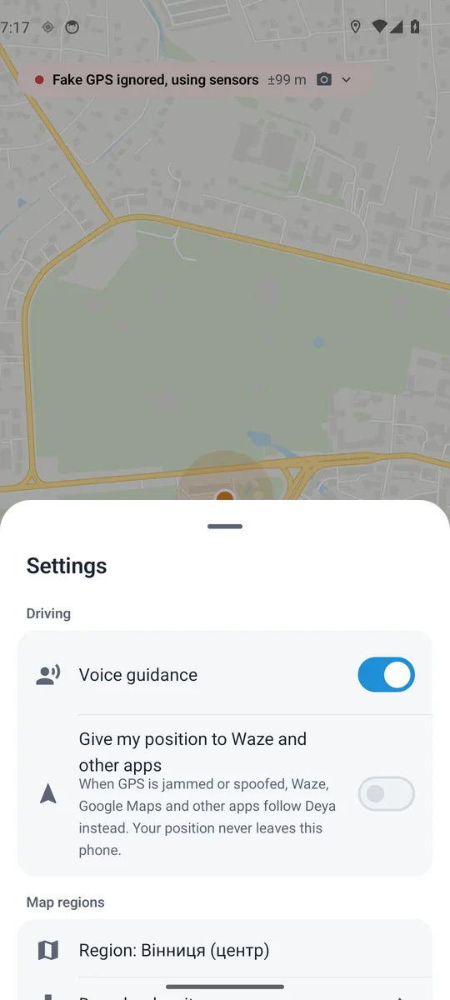
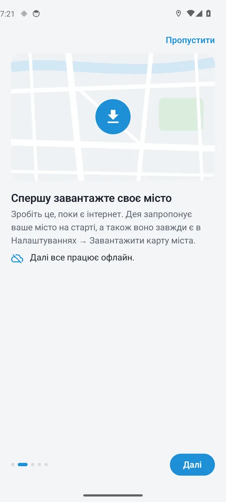
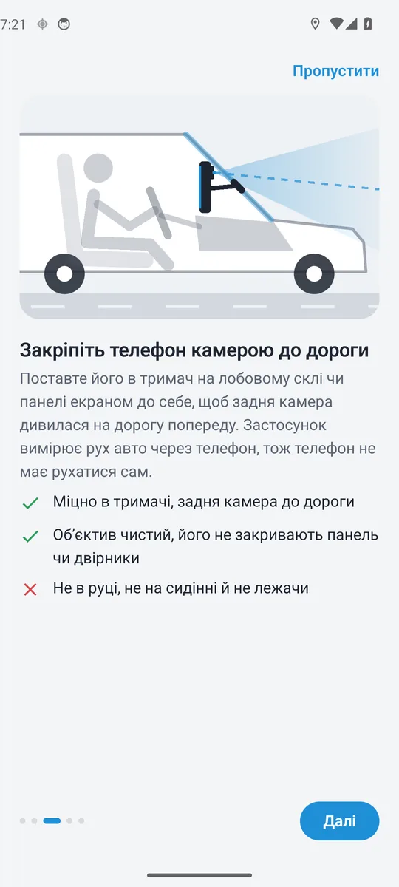
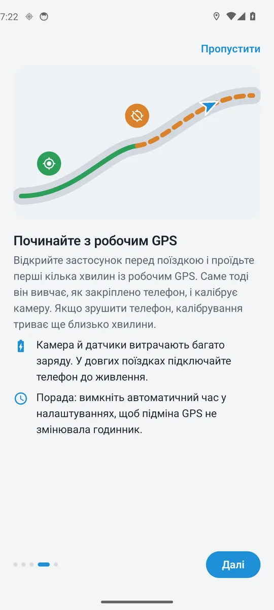
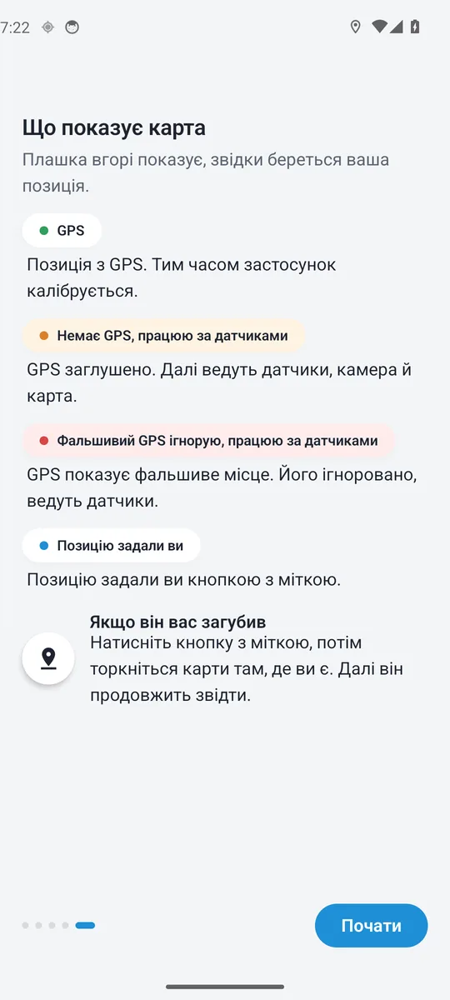

Навігатор, який знає, де ви, навіть коли GPS бреше
Дея тримає вас на карті, коли сигнал GPS глушать або підмінюють. Вона рахує рух авто за датчиками телефона й камерою та звіряє його з офлайн-картою вашого міста.


Плашка
Ви завжди бачите, звідки береться позиція
Вгорі екрана Деї є плашка. Вона чесно каже, чому зараз варто вірити, і показує можливу похибку в метрах.
-
GPS±3 м
GPS у нормі. Дея веде за ним і тим часом калібрує датчики та камеру під ваше авто.
-
Немає GPS, працюю за датчиками±18 м
Сигнал заглушено. Далі ведуть датчики, камера й карта, а похибка росте лише на довгих прямих.
-
Фальшивий GPS ігнорую, працюю за датчиками±24 м
GPS показує чуже місце. Дея помічає підміну й не дає їй збити вас з маршруту.
Торкніться плашки, і Дея пояснить, чому не вірить GPS:- позиція за межами України;
- не збігається з датчиками руху;
- позиція з’їжджає з доріг;
- рух не збігається зі швидкістю за Доплером.

Як це працює
Три джерела замість одного супутника
Звичайний навігатор сліпне, щойно GPS зникає або показує, що ви в аеропорту. Дея веде далі, бо знає, як рухається авто і якими дорогами воно може їхати.
- Датчики рухугіроскоп · акселерометр
- Відстежують кожен поворот, розгін і зупинку. Вони працюють завжди, навіть коли камера вимкнена.
- Камеразадня · за бажанням
- Дивиться на дорогу попереду й вимірює швидкість. Без неї Дея теж працює, але з камерою позиція значно точніша. Кадри аналізуються в пам’яті й одразу зникають.
- Офлайн-картаOpenStreetMap
- Дороги вашого міста лежать на телефоні. Дея перебирає тисячі можливих позицій, і кожна з них стоїть на справжній дорозі.
Інші застосунки
Їздите з Waze? Дея підставить йому правильну позицію

Увімкніть один перемикач у налаштуваннях. Коли GPS заглушено або підмінено, Waze, Google Maps та інші навігатори йдуть за Деєю. Щойно справжній GPS повертається, вони знову беруть його.
Дея стає джерелом позиції для Android лише на телефоні. Ваше місцезнаходження нікуди не надсилається.
Перша поїздка
Готово за чотири кроки
Знадобиться тримач для телефона на лобовому склі або панелі. Інтернет потрібен лише один раз, щоб завантажити карту.
-

Завантажте місто
Поки є інтернет. Після цього все працює офлайн.
-

Закріпіть телефон
У тримачі, екраном до себе, щоб задня камера дивилася на дорогу.
-

Почніть з робочим GPS
За першу хвилину-дві Дея калібрує камеру й датчики під ваше авто.
-

Їдьте спокійно
Якщо Дея загубилася, торкніться кнопки з міткою й покажіть на карті, де ви.
Відео
Подивіться, як Дея шукає дорогу
Хмара з тисяч можливих позицій, кожна на справжній дорозі. Що далі ви їдете, то точніше Дея знає, де ви.
Приватність
Камера дивиться на дорогу, а не в інтернет
Зображення з камери ніколи не залишають ваш телефон. Дея не знає, хто ви, і не збирає, куди ви їздите.
- Фото й відео лишаються в телефоніКадри аналізуються в пам’яті й одразу зникають. Нічого не записується й не надсилається.
- Без акаунтів і рекламиНемає реєстрації, рекламних мереж чи аналітики, яка стежить за вами.
- Працює без інтернетуВизначення місця й маршрути рахуються на телефоні. Мережа потрібна лише, щоб завантажити карту.
Питання
Часті запитання
Чи потрібен інтернет?
Лише щоб завантажити карту свого міста. Далі Дея визначає місце й прокладає маршрут повністю офлайн.
Чи обов’язково вмикати камеру?
Ні. Без камери Дея працює на датчиках і карті та попереджає, що точність може бути нижчою. З камерою, спрямованою на дорогу, позиція значно точніша.
Який телефон підійде?
Смартфон на Android 8.0 або новішому з гіроскопом і акселерометром. Задня камера бажана. Майже всі сучасні телефони мають усе це.
Наскільки точно без GPS?
У місті, де багато поворотів, Дея зазвичай тримає вас на правильній вулиці. На довгих прямих дорогах похибка поступово росте, а щойно з’являється поворот чи справжній GPS, позиція знову уточнюється. Плашка вгорі завжди показує поточну похибку в метрах.
Чи сильно сідає батарея?
Камера й датчики працюють увесь час поїздки, тож у довгих поїздках краще тримати телефон на зарядці.
Чому саме «Дея»?
Від мему з вівцею, яка питає «Де я?». Тепер у неї є відповідь.
Будьте на карті, навіть коли GPS немає
Дея зовсім скоро з’явиться в Google Play.
- Завантажте файл кнопкою вище на телефоні з Android.
- Відкрийте його зі сповіщення або з папки «Завантаження».
- Дозвольте встановлення. Android попросить дозволу встановлювати застосунки з браузера: натисніть «Налаштування» й увімкніть «Дозволити з цього джерела».
- Натисніть «Встановити». Якщо Play Protect попередить про невідомий застосунок, оберіть «Усе одно встановити».
Оновлення теж з’являтимуться тут: просто завантажте й встановіть нову версію поверх старої. Усі версії